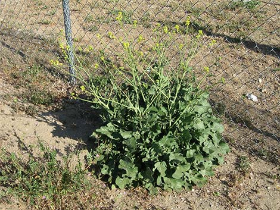

Shortpod mustard
Shortpod mustard (Hirschfeldia incana) is a flowering plant species related to the mustard plant.
Shortpod mustard grows natively throughout land adjacent to the sea in the Mediterranean region. The leaves of this species are edible, like many mustard plants.

Please scan the QRCode below to go to my website: